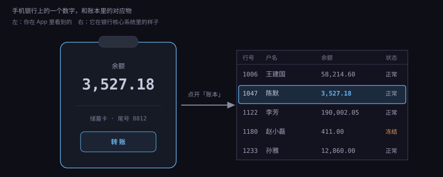
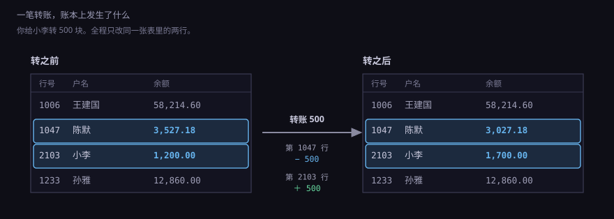
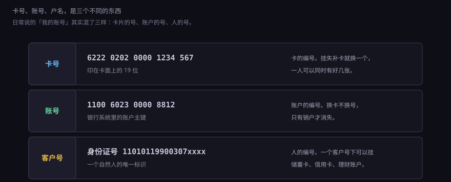
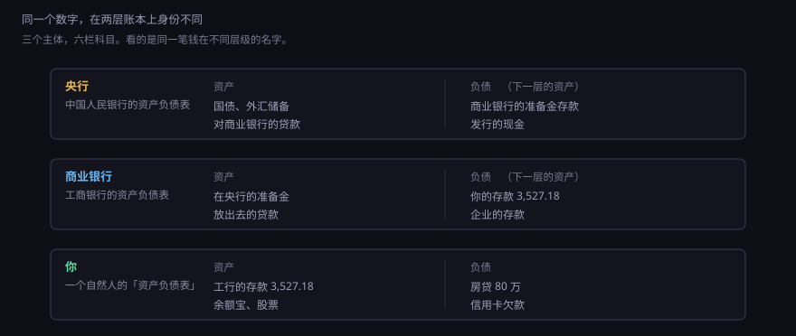
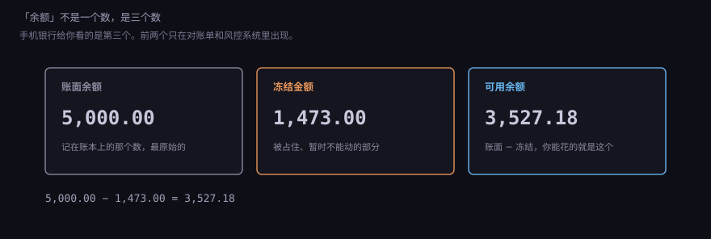
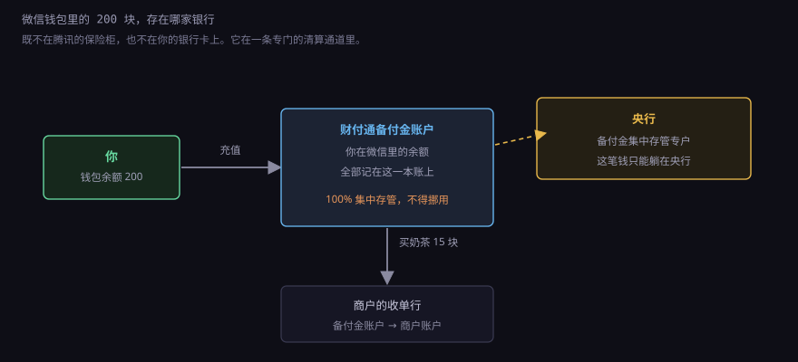

约 0.6 万字 · 6 张图 · 你手机上的「余额 3,527.18」， 在银行的数据库里是一行普通记录。这一节把那行记录拆开看
晚上十一点半，你躺床上打开手机银行，看了一眼余额：3,527.18。 这个数字让你安心，或者让你焦虑。但这一眼看到的到底是什么？
直觉上你会说：这是我的钱，存在银行里。再追问一句「存在哪」， 多数人脑子里浮现的是某个金库、某个保险柜。这个画面是错的。 银行网点柜子里的现金，全加起来也远远不够应付一天的取款， 而且你工资卡里的钱大概率是别人转进来的一串数字， 从来没变成过纸钞。
真实的情况是：银行有一台（准确说是一组）运行着核心系统的服务器， 里面有一张表，叫存款账户表。表里有一行，主键是一个账号， 其中一列写着 3527.18。你打开 App 的那一下， 前端向后台发了个查询请求，后台把这一列读出来，渲染成那个数字。
你没有「取回」任何东西，你只是读了一行。 这一点很重要，因为它决定了后面所有事情的性质： 转账是改行、冻结是改行、销户是删行（或者标记成已销户）。 钱的「移动」，在系统里其实是一次更新语句。
把那行记录摊开，大致是这些列。不同银行字段名不一样， 但结构大同小异：
| 字段 | 例子 | 作用 |
|---|---|---|
| 账号 | 1100 6023 0000 8812 | 主键，唯一标识这个账户 |
| 客户号 | C0293841 | 指向「人」那张表，一个客户号可以挂多个账户 |
| 币种 | CNY | 人民币账户和外币账户是分开的两行 |
| 账户类型 | 个人活期结算户 | 活期、定期、保证金、内部户，性质不同 |
| 余额 | 5,000.00 | 记账余额，通常以「分」为单位存整数 |
| 冻结金额 | 1,473.00 | 被预授权、司法冻结、质押占住的部分 |
| 状态 | 正常 | 正常、冻结、止付、销户 |
| 开户机构 | XX 银行北京中关村支行 | 决定这笔存款算哪个网点的业绩 |
| 开户日期 | 2019-03-14 | 判断长期不动户、睡眠户的依据 |
| 利率 | 0.20% | 活期挂牌利率，结息时用 |
注意「余额以分为单位存整数」这条。用浮点数存钱是个经典错误， 0.1 + 0.2 在二进制里不等于 0.3，几十万笔交易累积下来会对不上账。 所以系统内部一律用整数分，显示的时候再除以 100 加小数点。

图里第 1180 行状态是「冻结」。这一列的存在说明了一件事： 一行记录的「余额」和「这钱能不能花」是分开管的。 余额是账，状态是闸门。后面第 6 小节会细讲这个区别。
你给小李转 500 块，点确认，两秒后提示成功。系统里发生了什么？ 如果你们俩的账户在同一家银行，事情简单到近乎无聊： 找到第 1047 行，余额减 500；找到第 2103 行，余额加 500。
两条更新语句，必须一起成功。中间要是断电了， 钱扣了没加，或者加了没扣，都是事故。所以数据库事务在这里是硬需求： 要么两条都生效，要么都不生效。这就是「转账不能用普通文件记账」的原因。

这里有个容易被忽略的点：整个过程里，银行的钱一分没动。 它欠你的少了 500，欠小李的多了 500，负债总额不变。 你可能会问：那这 500 块到底在哪？答案是：它从来没在别的地方存在过， 它就是那两个数字的差。
跨行转账就不一样了。你和收款人不在同一家银行， 改两行不够，还得让两家银行在央行的账上结算（7.2.1 讲过准备金账户）。 所以跨行转账会有手续费、会有到账时间、会在夜里变慢—— 因为它多了一段「两家机构之间对账」的路。
顺手说一个生活细节：活期存款的利息按季结息， 每年 3 月、6 月、9 月、12 月的 20 日是结息日，21 日入账。 你某天突然发现多了几块钱，多半就是这个。 10000 块按 0.2% 算，一个季度五块左右，够买瓶水。
日常说话时这三个词是混着用的：「我账号多少」「卡号发你」。 但在系统里它们是完全不同的三样东西， 混着用会在某些场合吃亏——比如别人要给你汇款， 你发过去一个卡号，结果那张卡已经销了，钱就退回去了。
| 名称 | 是什么 | 会不会变 |
|---|---|---|
| 卡号 | 卡片的编号，19 位（借记卡）或 16 位（信用卡） | 挂失补卡就换一个 |
| 账号 | 账户的编号，是那行记录的主键 | 换卡不换号，销户才消失 |
| 客户号 | 银行给「你这个人」编的号 | 终身不变，一个客户号下挂多个账户 |

这个分层设计是有用的。你的卡丢了，补一张新卡， 工资照发、房贷照扣、绑定的代扣协议都不用重签—— 因为系统里那条代扣协议绑的是账号，不是卡号。 反过来，如果哪家银行告诉你「换卡要重新签代扣」， 那多半是它的系统把卡号当成了主键，是个设计缺陷。
还有一个常见误解：一个人在同一家银行只能有一个账户。 不是的。一个人可以有活期、定期、外币、理财、贷款好几个账户， 它们都挂在同一个客户号下。你在手机银行里看到的「总资产」， 就是把客户号下面所有账户的余额加起来。
这一节最重要的一张图。你在工行有 3,527.18， 这笔钱在工行的报表上叫什么？叫负债。 因为银行欠你——你随时可以来取，它必须给。
而工行在央行开的那个户（准备金账户）里有几十亿， 这笔钱在央行的报表上也是负债。央行欠工行。 一层套一层，每一层的「资产」都是上一层的「负债」。

看懂这张图，几个新闻就变得好理解了。 比如「某银行出现挤兑」，本质是一群债权人同时来要债， 而银行手上的现金远不够还——它的大部分资产是放出去的贷款， 三十年才还得完。再比如「央行降准」，是把银行交给央行的钱退一部分回去， 让银行手上的负债（准备金）变成可以放贷的头寸。
这也是为什么「银行会不会把我的钱弄丢」这个问题问错了方向。 钱不会丢，它本来就是账。真正的问题是： 当你要把它换成别的东西（现金、别人的存款、商品）时，对方认不认这个账。
回到那行记录。「余额」这一列旁边还有一个「冻结金额」。 你在 App 里看到的那个数，通常不是账面余额，而是两者的差。
举个例子：你账上有 5,000，昨天住酒店刷了 1,473 的预授权押金。 退房时酒店没结算，预授权还挂着。这时候你账面上有 5,000， 但能花的只有 3,527.18。很多人这时候会以为「银行把我的钱扣了」， 其实只是被占住了。

冻结的来源不止预授权。常见的还有四种：
「我账上有钱但付不了」这句话，在系统里从来不是矛盾， 是两个数不一样。客服每天要解释几十遍这件事。
上一节留了个尾巴：跨行转账时，钱从你账上扣了，收款人还没收到。 这段时间里它到底在哪？
答案是：挂在一个你从没听说过、也永远看不到的账户上。 银行内部把它叫内部户，具体到跨行汇出， 科目名通常是「待清算往账」或者「汇出汇款」。
内部户是银行给自己开的账户，不对外，不开卡，没有客户。 但它的数量比个人账户还多，常见的几类：
| 内部户 | 装什么 |
|---|---|
| 待清算往账 / 来账 | 汇出未落地、汇入未入账的资金 |
| 应付利息 | 已经计提、还没到结息日发给你的利息 |
| 久悬未取 | 长期不动户里那笔没人认领的余额 |
| 手续费收入 | 你交的每一笔跨行费、年费，先记在这里 |
| 应解汇款 | 汇进来但账号对不上、暂时挂着等人来领的钱 |
为什么必须有这个东西？因为复式记账要求每笔都有对手方。 你账户上减 500，系统里必须同时有另一个户加 500， 否则账就不平。跨行的时候，对手方还没准备好接收， 就先记在内部户上；等清算报文落地，再从内部户转到收款人账上。
这就解释了「受理成功，次日到账」这句话的字面意思： 你的钱已经出了你的户，进了银行的内部户， 只是还没进对方的户。它不是「还没开始办」，是「办到一半停在那」。
同一套逻辑也解释了退汇。对方账号错了，钱退回来， 走的路径是把内部户上的那笔挂账原路退回， 所以退款通常比汇款慢一天——它又走了一遍那条路。
到这里，前面所有的说法都可以用一句 SQL 概括：
UPDATE 账户 SET 余额 = 余额 - 500 WHERE 账号 = '...'。
对个人账户，这样写几十年都没问题——你一天也就刷几笔。
但换成商户收款户，事情就变了。一个连锁超市的收款账户， 几千家门店同时在上传流水，每秒几千笔都要改同一行。 数据库的行锁会让这些请求排队，吞吐量瞬间掉到每秒几十笔。 这就是所谓的热点账户问题。
业内有三种解法，一代比一代狠：
| 做法 | 怎么干 | 代价 |
|---|---|---|
| 悲观锁 | 改之前先锁住这行，别人等着 | 正确，但排队，扛不住高并发 |
| 乐观锁 | 读版本号，写的时候比对，不一致就重试 | 冲突多的时候重试风暴，更慢 |
| 缓冲记账 | 先把流水写进只追加的流水表，余额由后台定期汇总 | 余额有延迟，是最终一致 |
银行核心系统普遍用第三种，名字叫「累计记账」或「汇总记账」。 它的核心思想是：把「记一笔」和「改余额」拆开。 交易发生时只往流水表里插一行（追加写，不锁，极快）， 余额字段由一个定时任务每隔几秒汇总一次。
这样做的后果你已经见过了：某些平台转账后余额没立刻变， 刷新一下才对；某些商户后台的「今日收入」比实际到账少几笔。 不是系统坏了，是设计上就允许短暂不一致。
还有一招是拆户：把一个热点户拆成几十个子户， 按用户 ID 取模路由，查询时把子户余额加起来。 这跟数据库分库分表是同一个思路，只不过对象从表变成了账户。
讲这段是为了说明一件事：「余额」这个数字在工程上不是原子存在的。 它可能是一个汇总值、一个缓存、一个视图。 你在不同界面看到的同一个余额，背后可能是不同的计算路径。
前面说的「改两行」，是逻辑上的说法。物理上，一笔交易要经过好几个系统： 渠道（App、柜面、ATM）、前置、核心、清算、总账。 每一层都有自己的库、自己的表。
渠道层记的是「请求」，核心层记的是「账户余额」， 总账层记的是「科目发生额」。一笔转账在核心层已经生效了， 总账层可能还没记上。这两层之间靠日终批处理（俗称跑批）对齐。
跑批通常在深夜，网点关门之后。这就是为什么：
对账这件事听着枯燥，但它才是账本可信的根基。 银行每天要拿自己的账和别人家的账对：和央行的准备金对、和同业的对、 和支付机构（网联、银联）的对。对不上的那笔叫「差错」， 有一整套流程去查。差错率是核心系统最重要的指标之一， 比「App 好不好用」重要得多。
这里补一句现实感：你在 App 上看到的余额，是核心系统的一个视图，不是真相本身。 真相是总账，是你看不到的那一层。所有审计、监管报送、年报， 都以总账为准，不以你的手机为准。
既然钱就是一行记录，那谁能改它，就等于谁能动你的钱。 这件事的答案比想象中严格。
| 主体 | 能做什么 | 约束 |
|---|---|---|
| 你自己 | 转账、消费、取现 | 要密码、短信、人脸，大额还要人工核实 |
| 银行柜员 | 存款、取款、修改客户信息 | 每笔操作留痕，有权限，越权要授权码 |
| 法院、公安、税务 | 冻结、扣划 | 要正式文书，银行必须执行，不得通知你（涉案时） |
| 银行自己 | 扣收贷款本息、收手续费 | 必须有合同授权，且要提前告知 |
| 黑客 | 理论上能改 | 所以有加密、有对账、有双人复核 |
注意第三行。「银行不能随便动我的钱」这句话对， 但「没人能随便动我的钱」这句话错。司法冻结不需要你同意， 而且往往不通知你。你发现卡不能用了，去问银行， 银行只会告诉你「有权机关冻结」，具体哪个机关、什么案子，它也说不清， 因为文书上可能就是这么要求的。
这也是为什么「账户安全」这个词在银行内部指的其实是两件事： 一是别被骗子骗走（你的责任），二是别被内部人改错（它的责任）。 前者靠限额、延时到账、风险模型；后者靠双人复核、事后监督、审计。
你微信钱包里有 200 块。这 200 块存在哪家银行？ 很多人以为是「存在微信里」，或者以为它跟银行卡余额是一回事。 都不是。
你在微信里的余额，法律上是财付通欠你的一笔钱， 不是银行存款。这笔钱在财付通的账上叫「客户备付金」， 从 2019 年 1 月起，必须 100% 集中交存到央行的一个专门账户， 支付机构不能挪用，也不能拿来放贷。

这套安排是 2017 年前后一系列风险事件逼出来的。 更早的时候，备付金存在各家商业银行，支付机构可以拿利息、 可以跟银行谈协议存款，甚至挪去投资。规模上万亿， 一旦出问题就是系统性风险。改成集中存管之后， 这笔钱的利息也没了，支付机构靠手续费活着。
所以有两件事要说清楚：
顺带说一句，M1 的口径 2025 年起把非银行支付机构的备付金纳进来了。 这不是文字游戏：既然你在微信里的钱能随时付出去， 它在功能上就是「随时能付的钱」，统计上就该算进 M1。
数字人民币（e-CNY）经常被误解成「国家版支付宝」。 它的定位完全不一样：它是M0，也就是流通中现金的数字化， 是央行的直接负债，不是商业银行的存款。
这个定位带来一个结构差别：银行存款是「银行欠你」， 数字人民币是「央行欠你」。前者在银行倒闭时靠存款保险兜底， 后者本来就没有对手方风险——央行不会倒闭。
它装在「钱包」里，不叫「账户」。钱包按实名强度分四类， 最弱的一类不用绑银行卡，用手机号就能开，但限额很低； 最强的一类要临柜面签，额度接近现金。这套分级是为了在 「可控匿名」和「反洗钱」之间找平衡：小额匿名，大额可追。
数字人民币也不计息。这一点很多人不理解：既然是国家发的钱， 为什么不给点利息？因为一旦计息，它就变成了存款， 会跟商业银行抢存款，整个两级体系（7.2 那一章）的地基就动了。 不计息，是刻意的设计，不是技术上做不到。
这一节讲的东西很底层，容易让人产生一种错觉： 既然一切都是记录，那改记录就等于改钱。 这个推论是错的，错在几个地方。
| 它撑不起 | 为什么 | 现实后果 |
|---|---|---|
| 证明这钱是你的 | 记录只说明银行欠谁，不说明这笔钱怎么来的 | 涉诈资金会被追缴，哪怕你不知情 |
| 证明你是谁 | 账户是记账单位，身份靠证件和联网核查 | 买卖账户成了黑产，所以有「断卡行动」 |
| 代表你的信用 | 余额是存量，信用看的是流水与履约 | 存款百万也可能贷不到款，因为没流水 |
| 对抗通胀 | 它只记数字，不保证购买力 | 活期 0.2%，通胀 2%，放着就是亏 |
最要紧的是第一行。账户里的数字是「银行欠你」的凭证， 不是「这笔钱干净」的凭证。电信诈骗的钱进你账户， 你取出来花了，公安照样能追；你把账户借给别人走账， 哪怕一分钱没拿，也可能构成帮信罪。
所以「账户」这个东西的性质，说到底是一句很朴素的话： 它是一份被社会普遍承认的债权记录。 承认它，是因为有一套制度在背后撑着——准备金、清算、监管、 存款保险、司法体系。抽掉任何一根，这一行数字就只是一行数字。
下一节把这一行往外扩一层：为什么你的二类卡一天只能转一万。 同一个人的账户被分成 I、II、III 三等， 每一等对应一套开立方式和限额。这套分级看着麻烦， 背后是远程开户和反洗钱之间的一次妥协。